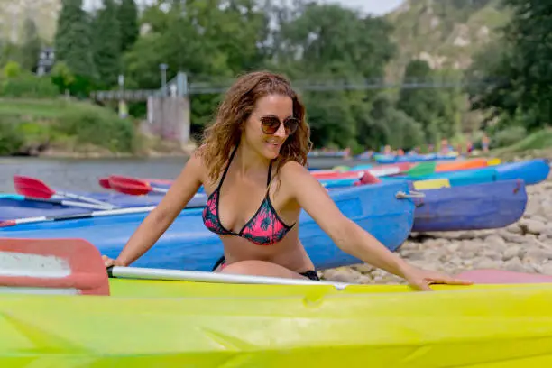

Welcome to Rapids
Welcome to the ultimate whitewater rafting experience! Our mission is to create an immersive and user-friendly online platform that showcases the exhilarating thrill of whitewater adventures. We believe in the joy of exploration and the laughter shared with family and friends. Dive into fun, embrace the wild rapids, and let us help you plan an unforgettable journey. Join our community where excitement, safety, and memories await. Come, feel the rush, and create lasting legacies on the water!